ARCHITECTURAL SCOPE
CORTEX Ω ↔ ARGUS
ARGUS documents itself as a standalone subsystem of the broader CORTEX architecture.
Documented scope ↗ARCHITECT. ARTIST. SCIENTIST.
I’m Rishabh D. I investigate what happens between a model request and the hardware that executes it. My work connects AI infrastructure, networking, autonomous agents and the runtimes beneath them.
Architect the system. Study the mechanism. Make something worth looking at.
01 / WORKING RECORD
A small, maintained window into the work. Evidence and intent remain separate.
Manually maintained content snapshot. “Updated” is the content edit date, not a hardware or activity heartbeat.
CONTENT TELEMETRY / counts from these records · source review 2026-10-02 · no realtime monitoring.
02 / SYSTEMS IN ORBIT
Open a panel to inspect the question, the implementation and the unresolved boundary.

An architectural umbrella from intent to compute.
Architecture scope, not a claim that the layers are integrated or operational.

Make a request’s execution path explicit and inspectable.
The current verifier checks non-empty output. It does not establish correctness, implemented tool governance or production readiness.

Treat communication behavior as part of compute.
Single-bottleneck synthetic model. No RDMA feedback, GPU timing or real NIC measurements. The NCCL fixture is invented parser-test input.

Connect fault evidence to a diagnosis that can be inspected.
Schemas are implemented; a working simulator, API or analyzer is not documented.
RELATIONSHIPS / THE LAYERS BENEATH
This is a map of architectural scope and research relationships, not a deployed dependency graph.
ARCHITECTURAL SCOPE
ARGUS documents itself as a standalone subsystem of the broader CORTEX architecture.
Documented scope ↗SHARED QUESTION
Communication behavior and failure evidence meet at observability. Runtime integration is not documented.
Where does execution meet the memory hierarchy?
What does communication do to the execution path?
What can the host observe and control?
Which hardware assumptions remain untested?
This is a map of architectural scope and research relationships, not a deployed dependency graph.
03 / EVIDENCE / TRACE / FAILURE
Source revisions and model limits travel with the results. No benchmark is implied by an animation.
Reproducible counterfactuals. All results currently recorded here are synthetic.
python -m fabriclab suiteNearest-rank p99 covers accepted packets only; no hardware run.
python -m fabriclab incast --staggeredStaggering is not a free optimization available to every real workload.
python -m fabriclab incast --capacity 8Capacity includes the packet being serviced, not just the waiting queue.
python -m fabriclab incast --staggered --interval-us 4Synthetic FIFO outcome; not an NCCL completion estimate or a real GPU performance result.
No records in this section match the selected system.
Observations kept close to the question that produced them.
No records in this section match the selected system.
A failure is a record of what the system taught us.
No records in this section match the selected system.
04 / OPERATING MODEL
Interests become useful when they turn into questions that can survive an experiment.
What has to exist beneath this for it to work?
What can I build to test the assumption?
Where does it break, and what evidence explains why?
Can the complexity become legible?
QUESTION / Q-01
The incast suite keeps offered traffic comparable while changing phase and buffering.
QUESTION / Q-02
Delivered-packet p99 excludes dropped packets; the model reports a separate completion barrier.
QUESTION / Q-03
ARGUS checks output presence today; semantic verification is a planned stage.
QUESTION / Q-04
Permission and sandboxed execution modules are documented as planned.
QUESTION / Q-05
Collective communication imposes a temporary logical topology on physical paths.
Activity and evidence, never skill percentages. “Built with” describes artifacts, not mastery.
An inspectable inference spine, with governance still planned.
Synthetic congestion and collective communication models.
Execution traces and a supported NCCL log reader.
Communication questions; no distributed serving deployment is claimed.
Hardware baseline protocol; measurements remain planned.
Host and transport boundaries in the research scope.
Lower-level runtime relationships, without a proficiency claim.
Capability policy is an open architecture question.
Documented DGX and topology study material.
05 / THE BENCH
Every instrument has a role and a boundary. A tool belongs here because of what it helps expose.
06 / TRANSMISSIONS
Existing technical notes, connected to the work that gives them context. No invented publication history.
TRANSMISSION / T-001 · EXISTING TECHNICAL NOTE
A collective is an algorithm and a traffic generator. Inspect how logical rings and trees meet physical paths.
AI FABRIC LAB / DATE NOT DOCUMENTED
Read the note ↗TRANSMISSION / T-002 · EXISTING TECHNICAL NOTE
Follow the chain from a network event to an application stall, rather than interpreting an isolated counter.
AI FABRIC LAB / DATE NOT DOCUMENTED
Read the note ↗07 / INTERSECTIONS
If the problem lives somewhere between a model, a network and a machine, I’d like to hear about it.